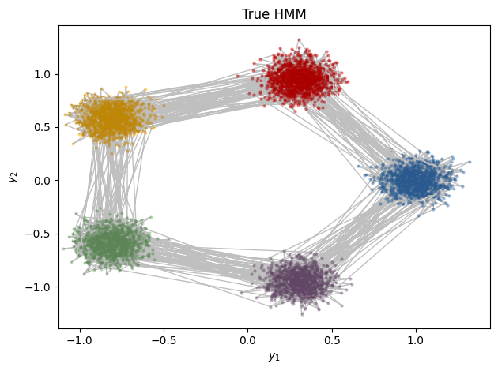
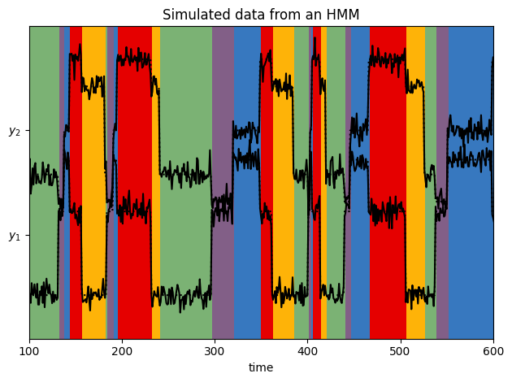
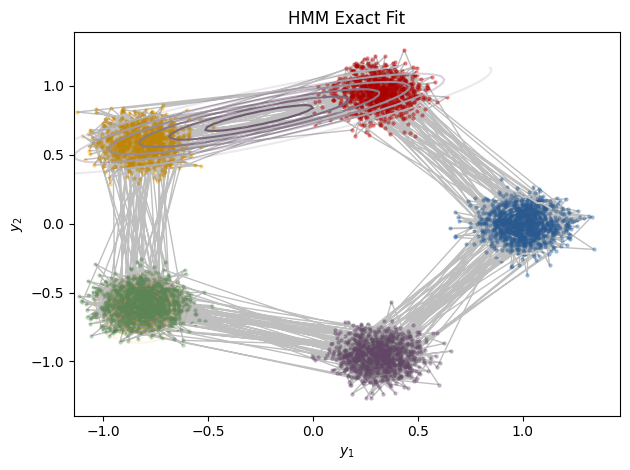
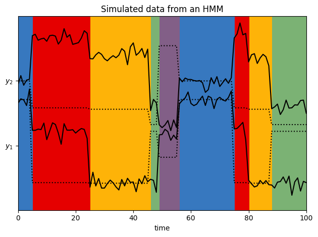

Gaussian HMM
Contents
Gaussian HMM#
We use two algorithms for fitting a 2d Gaussian HMM:
(Batch) EM
Stochastic EM
Setup#
try:
import dynamax
except ModuleNotFoundError:
print('installing dynamax')
%pip install -qq git+https://github.com/probml/dynamax.git
import dynamax
import inspect
import inspect as py_inspect
import rich
from rich import inspect as r_inspect
from rich import print as r_print
def print_source(fname):
r_print(py_inspect.getsource(fname))
%load_ext autoreload
%autoreload 2
from functools import partial
from dynamax.hmm.models import GaussianHMM
import dynamax.hmm.demos.gaussian_hmm_2d as demo
import jax.numpy as jnp
import jax.random as jr
from jax import vmap
import matplotlib.pyplot as plt
/opt/hostedtoolcache/Python/3.9.15/x64/lib/python3.9/site-packages/tqdm/auto.py:22: TqdmWarning: IProgress not found. Please update jupyter and ipywidgets. See https://ipywidgets.readthedocs.io/en/stable/user_install.html
from .autonotebook import tqdm as notebook_tqdm
WARNING:absl:No GPU/TPU found, falling back to CPU. (Set TF_CPP_MIN_LOG_LEVEL=0 and rerun for more info.)
Generate sample data#
num_batches = 18
num_timesteps = 5000
# Make an HMM and sample data and true underlying states
# Specify parameters of the HMM
num_states = 5
emission_dim = 2
hmm = GaussianHMM(num_states, emission_dim)
params = dict(
initial=dict(probs=jnp.ones(num_states) / num_states),
transitions=dict(transition_matrix=0.95 * jnp.eye(num_states) + 0.05 * jnp.roll(jnp.eye(num_states), 1, axis=1)),
emissions=dict(
means=jnp.column_stack([
jnp.cos(jnp.linspace(0, 2 * jnp.pi, num_states + 1))[:-1],
jnp.sin(jnp.linspace(0, 2 * jnp.pi, num_states + 1))[:-1],
jnp.zeros((num_states, emission_dim - 2)),
]),
covs=jnp.tile(0.1**2 * jnp.eye(emission_dim), (num_states, 1, 1)))
)
# Sample data
batch_true_states, batch_emissions = \
vmap(partial(hmm.sample, params, num_timesteps=num_timesteps))(
jr.split(jr.PRNGKey(0), num_batches))
i_batch = 0
# Plot emissions and true_states in the emissions plane
demo.plot_gaussian_hmm(hmm, params, batch_emissions[0], batch_true_states[0], "True HMM");
# Plot emissions vs. time, ith background colored by true state
demo.plot_gaussian_hmm_data(hmm, params, batch_emissions[0], batch_true_states[0], xlim=(100, 600));


Initialize model and fit to data#
# Initialize HMMs, with inexact number of states
em_params, param_props = hmm.random_initialization(jr.PRNGKey(1))
sem_params, param_props = hmm.random_initialization(jr.PRNGKey(1))
# Fit
num_iters = 50
print('Fitting via exact EM...')
em_params, em_lps = hmm.fit_em(em_params, param_props, batch_emissions, num_iters=num_iters)
print()
print('Fitting via stochastic EM (no progress bar)...')
minibatch_size = 3
emissions_generator = batch_emissions.reshape(num_batches // minibatch_size, minibatch_size, num_timesteps, emission_dim)
sem_params, sem_lps = hmm.fit_stochastic_em(sem_params, param_props, emissions_generator, num_epochs=num_iters)
print('\tDone')
# Plot log probs vs num_iterations
plt.plot(jnp.arange(len(em_lps)), em_lps, label='Exact EM')
plt.plot(jnp.arange(len(sem_lps)), sem_lps, label='Stochastic EM')
plt.xlabel('num epochs')
plt.ylabel('log prob')
plt.legend()
Fitting via exact EM...
0%| | 0/50 [00:00<?, ?it/s]
2%|▏ | 1/50 [00:02<02:16, 2.79s/it]
8%|▊ | 4/50 [00:02<00:25, 1.79it/s]
14%|█▍ | 7/50 [00:03<00:12, 3.58it/s]
20%|██ | 10/50 [00:03<00:06, 5.75it/s]
26%|██▌ | 13/50 [00:03<00:04, 8.23it/s]
32%|███▏ | 16/50 [00:03<00:03, 10.95it/s]
38%|███▊ | 19/50 [00:03<00:02, 13.76it/s]
44%|████▍ | 22/50 [00:03<00:01, 16.43it/s]
50%|█████ | 25/50 [00:03<00:01, 18.54it/s]
56%|█████▌ | 28/50 [00:03<00:01, 20.48it/s]
62%|██████▏ | 31/50 [00:03<00:00, 22.17it/s]
68%|██████▊ | 34/50 [00:04<00:00, 23.74it/s]
74%|███████▍ | 37/50 [00:04<00:00, 25.03it/s]
80%|████████ | 40/50 [00:04<00:00, 26.08it/s]
86%|████████▌ | 43/50 [00:04<00:00, 26.74it/s]
92%|█████████▏| 46/50 [00:04<00:00, 27.25it/s]
98%|█████████▊| 49/50 [00:04<00:00, 27.61it/s]
100%|██████████| 50/50 [00:04<00:00, 10.93it/s]
Fitting via stochastic EM (no progress bar)...
0%| | 0/50 [00:00<?, ?it/s]
2%|▏ | 1/50 [00:03<02:29, 3.05s/it]
4%|▍ | 2/50 [00:03<01:03, 1.32s/it]
6%|▌ | 3/50 [00:03<00:35, 1.31it/s]
8%|▊ | 4/50 [00:03<00:23, 1.99it/s]
10%|█ | 5/50 [00:03<00:16, 2.76it/s]
12%|█▏ | 6/50 [00:03<00:12, 3.60it/s]
14%|█▍ | 7/50 [00:03<00:09, 4.50it/s]
16%|█▌ | 8/50 [00:03<00:07, 5.42it/s]
18%|█▊ | 9/50 [00:03<00:06, 6.28it/s]
20%|██ | 10/50 [00:04<00:05, 7.04it/s]
22%|██▏ | 11/50 [00:04<00:05, 7.52it/s]
24%|██▍ | 12/50 [00:04<00:04, 7.96it/s]
26%|██▌ | 13/50 [00:04<00:04, 8.45it/s]
28%|██▊ | 14/50 [00:04<00:04, 8.81it/s]
30%|███ | 15/50 [00:04<00:03, 9.07it/s]
32%|███▏ | 16/50 [00:04<00:03, 9.26it/s]
34%|███▍ | 17/50 [00:04<00:03, 9.41it/s]
36%|███▌ | 18/50 [00:04<00:03, 9.49it/s]
38%|███▊ | 19/50 [00:04<00:03, 9.48it/s]
40%|████ | 20/50 [00:05<00:03, 9.31it/s]
42%|████▏ | 21/50 [00:05<00:03, 9.19it/s]
44%|████▍ | 22/50 [00:05<00:03, 9.23it/s]
46%|████▌ | 23/50 [00:05<00:02, 9.17it/s]
48%|████▊ | 24/50 [00:05<00:02, 9.05it/s]
50%|█████ | 25/50 [00:05<00:02, 9.21it/s]
52%|█████▏ | 26/50 [00:05<00:02, 9.40it/s]
56%|█████▌ | 28/50 [00:05<00:02, 9.58it/s]
58%|█████▊ | 29/50 [00:06<00:02, 9.51it/s]
60%|██████ | 30/50 [00:06<00:02, 9.47it/s]
62%|██████▏ | 31/50 [00:06<00:02, 9.45it/s]
64%|██████▍ | 32/50 [00:06<00:01, 9.50it/s]
66%|██████▌ | 33/50 [00:06<00:01, 9.47it/s]
68%|██████▊ | 34/50 [00:06<00:01, 9.44it/s]
70%|███████ | 35/50 [00:06<00:01, 9.51it/s]
72%|███████▏ | 36/50 [00:06<00:01, 9.51it/s]
74%|███████▍ | 37/50 [00:06<00:01, 9.58it/s]
76%|███████▌ | 38/50 [00:06<00:01, 9.66it/s]
78%|███████▊ | 39/50 [00:07<00:01, 9.45it/s]
80%|████████ | 40/50 [00:07<00:01, 9.47it/s]
82%|████████▏ | 41/50 [00:07<00:00, 9.48it/s]
84%|████████▍ | 42/50 [00:07<00:00, 9.48it/s]
86%|████████▌ | 43/50 [00:07<00:00, 9.43it/s]
88%|████████▊ | 44/50 [00:07<00:00, 9.50it/s]
90%|█████████ | 45/50 [00:07<00:00, 9.54it/s]
92%|█████████▏| 46/50 [00:07<00:00, 9.52it/s]
94%|█████████▍| 47/50 [00:07<00:00, 9.51it/s]
96%|█████████▌| 48/50 [00:08<00:00, 9.07it/s]
98%|█████████▊| 49/50 [00:08<00:00, 8.85it/s]
100%|██████████| 50/50 [00:08<00:00, 8.69it/s]
100%|██████████| 50/50 [00:08<00:00, 6.04it/s]
Done
<matplotlib.legend.Legend at 0x7f684fcb5490>
Visualize the fitted model#
i_batch = 5
demo.plot_gaussian_hmm(hmm, em_params, batch_emissions[i_batch], batch_true_states[i_batch], "HMM Exact Fit")
demo.plot_gaussian_hmm_data(hmm, em_params, batch_emissions[i_batch], batch_true_states[i_batch], xlim=(0, 100))
demo.plot_gaussian_hmm(hmm, sem_params, batch_emissions[i_batch], batch_true_states[i_batch], "HMM Stoch Fit");
demo.plot_gaussian_hmm_data(hmm, sem_params, batch_emissions[i_batch], batch_true_states[i_batch], xlim=(0, 100));


Show the plotting code#
print_source(demo.plot_gaussian_hmm)
def plot_gaussian_hmm(hmm, params, emissions, states, ttl="Emission Distributions"): lim = 0.85 * abs(emissions).max() XX, YY = jnp.meshgrid(jnp.linspace(-lim, lim, 100), jnp.linspace(-lim, lim, 100)) grid = jnp.column_stack((XX.ravel(), YY.ravel())) plt.figure() for k in range(hmm.num_states): lls = hmm.emission_distribution(params, k).log_prob(grid) plt.contour(XX, YY, jnp.exp(lls).reshape(XX.shape), cmap=white_to_color_cmap(COLORS)) plt.plot(emissions, emissions, "o", mfc=COLORS, mec="none", ms=3, alpha=0.5) plt.plot(emissions[:, 0], emissions[:, 1], "-k", lw=1, alpha=0.25) plt.xlabel("$y_1$") plt.ylabel("$y_2$") plt.title(ttl) plt.tight_layout() return plt.gcf()